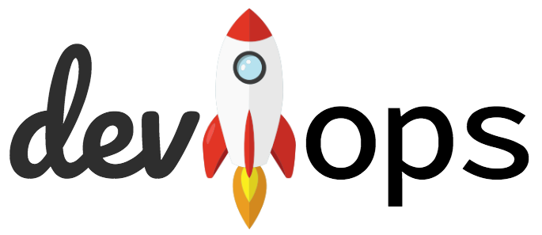

Analyst ● Anthropologist ● Architect ● Full-Stack Developer ● DevOps Lead ● Mentor ● Speaker ● Smokejumper
Contact: jonathan.eunice@gmail.com
DevOps is a force-multiplier. While it’s not without frustrations, it provides the historic opportunity to connect all phases of IT, from the imagination of designers and architects through the meticulous monitoring and care of production services—in other words, the power and levers to “improve the way things are done.” » continue reading »
For years I’ve written Python code that aggressively maintains compatibility from Python 2.5 forward. In many cases I bridged a decade of platform evolution almost seamlessly. But I face a growing list of unpalatable compromises in order to continue supporting older legacy versions—not just 2.7, which is facing its EOL in less than a year, but even anything prior to 3.6. So in the spirit of Marie Kondo, I’m tidying up that which no longer sparks joy. “Python 2, thank you for your long, faithful, and extremely valuable service! You too, Python 3.0-3.5. You were…um…important transitional vehicles.” And now, let the decluttering begin… » continue reading »
Almost 100% of the bottom-line advances IT has delivered in the last three decades can be attributed to integration. This isn’t to denigrate vast advances in CPUs, memory, displays, storage, batteries, and other components, nor equally massive improvements in networking, programming tools, middleware, development and deployment methods, and all the rest. But from a macro or economic perspective, even the non-linear rocket-powered acceleration of Moore’s Law is an incremental improvement over the 1960s or 1970s. What’s really transformed IT in quality not just quantity is our capacity to put things together—to connect systems and applications here with systems and applications there in cooperative, leveraged ways that multiply their value. “Stand-alone systems” used to be the norm; now they’re anachronistic oxymorons. The integration imperative profoundly changes what businesses must be or become, what developers must create, and how they must go about creating and delivering it. ( » essay forthcoming « )
| Hate email, but you gotta have it, right? | |
| Occasionally holding forth on IT, development, DevOps, and techie life | |
| Stack Overflow | 10.7k points (top 2% in 2018 and 1Q19; top 4% overall) |
| Software Engineering | 8.2k points (top 3% overall) |
| GitHub | ~100 Git repositories owned or actively contributed to |
| Bitbucket | Dozens of Mercurial repositories (and a few Git) |
| Hundreds of connections made | |
| Travis CI | Numerous continuously-integrated open source projects |
| PyPI | Open source Python modules |
| codementor | 5-star mentor with hundreds of successful sessions and ~100 glowing reviews |